Префектура Канагава · Камакура · где остановиться
Modern Ryokan kishi-ke: дом самурайского рода у пляжа Юигахама в Камакуре
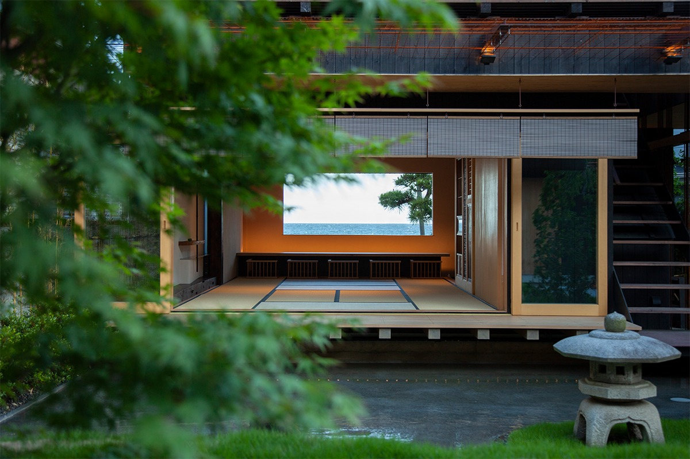
В Камакуре, через дорогу от пляжа Юигахама, стоит дом, который сдают одной компании в день. Здесь не просто ночуют, а пробуют жить по-японски: заваривают чай, знакомятся с благовониями, сидят у сада камней и учатся довольствоваться малым.
Идея
Знать меру
Modern Ryokan kishi-ke открылся в 2019 году и в том же году получил японскую премию Good Design Award. Дом снимают целиком: в день он принимает одну компанию, с ночёвкой не больше четырёх человек, на день не больше пяти. Окна выходят на море, позади дома японский сад, и ни то ни другое не приходится делить с чужими людьми.
Тема рёкана взята из учения дзэн: «тисоку», умение быть довольным тем, что есть. Хозяева задумали другой способ путешествовать. Не только осматривать достопримечательности, есть и спать, а пожить в Камакуре почти как местный житель: прикоснуться к здешней культуре, познакомиться с людьми и через это почувствовать, что для радости нужно не так уж много. Гостям предлагают чайную церемонию, искусство благовоний и другие японские занятия.
Во главе рёкана стоит Нобуюки Киси, шестнадцатый глава рода Киси. Его предки были самураями и служили клану Икэда, правителям княжества Окаяма. Слово «тисоку» он с детства слышал от деда, и оно стало девизом дома. Камакура, где когда-то распространялся дзэн, кажется для такого рёкана самым подходящим местом.
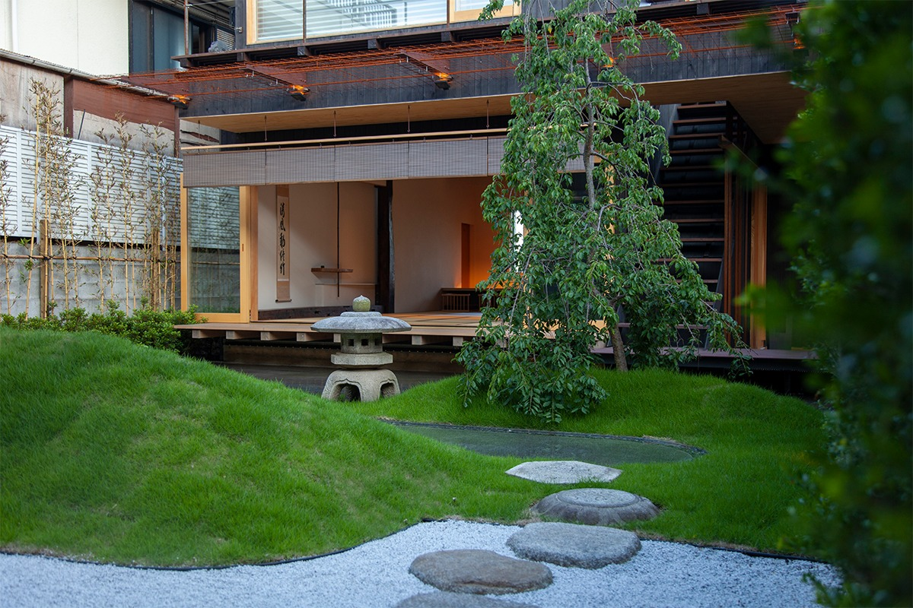
Дом собран из материалов старого самурайского жилища и современных решений. Над ним работали архитектор, прежде работавший в бюро Кэнго Кумы, и ландшафтный архитектор. Рядом оказываются древние японские сосуды и новые технологии, и такое соседство старого и нового запоминается надолго.
Дом
Комната с татами, спальня и ванна
Сердце рёкана это большая комната с татами. Здесь едят, пьют чай и занимаются всем, что предлагает дом. Через панорамное окно видны море и сосны, через другое окно японский сад. Сад соединён с комнатой верандой энгава: на ней можно просто сидеть и думать. На полу лучшие татами, а балки и раздвижные двери сделаны из дерева, которому больше ста лет. В этой комнате чувствуется и история Японии, и история самого рода Киси.
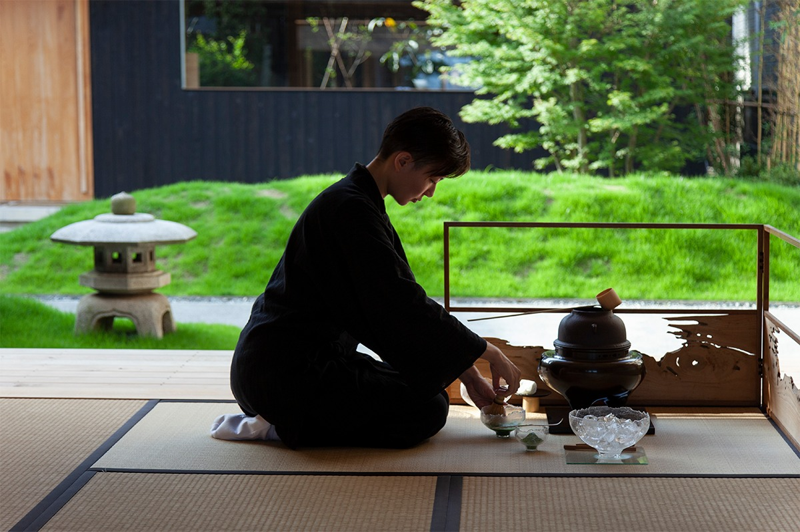
У дзэнских монахов есть известная поговорка: «Встаёшь, и хватает половины татами, ложишься, и хватает одного». Когда спишь, думай только о сне, а когда бодрствуешь, вещей для работы нужно совсем немного. В этом доме её смысл понимаешь телом. Сон здесь считают делом важным, поэтому в спальне только лучшие матрасы и постельное бельё и ничего лишнего. Из окна спальни виден сад.
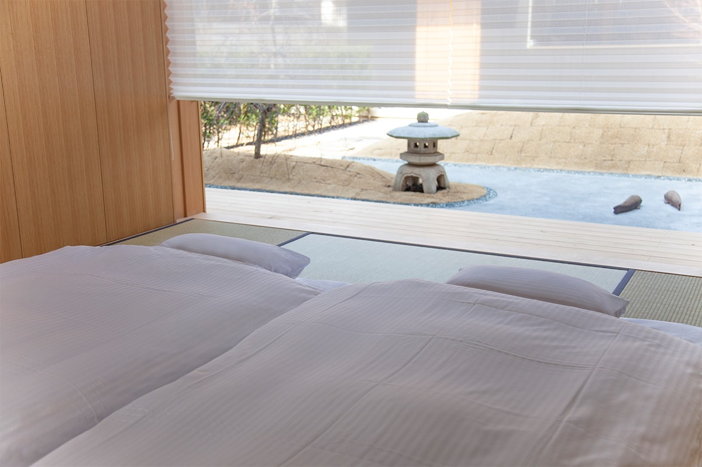
Глубокая просторная ванна сделана из лучшей хибы из префектуры Аомори. Древесный аромат, по словам хозяев, успокаивает нервную систему и помогает уснуть. Для купания приготовлены японские соли для ванн и сезонные растения.
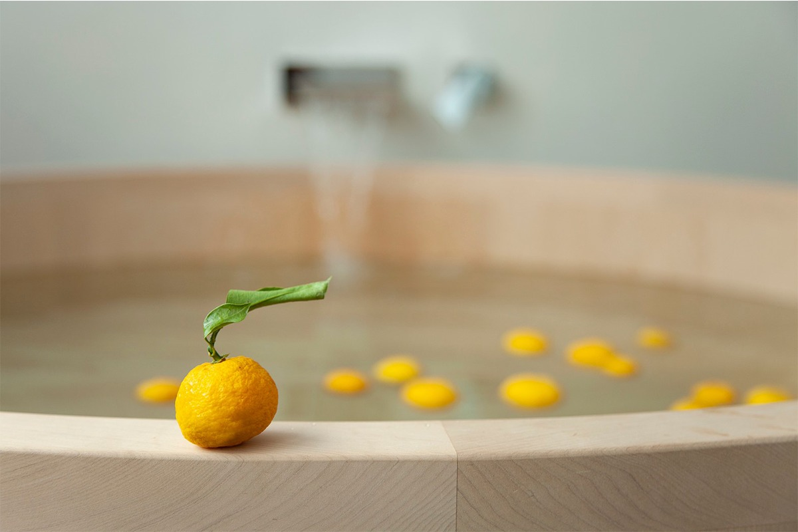
Сад
Сухие камни и вода по щиколотку
Сад придумал ландшафтный архитектор, и в нём две части. Первая это «карэсансуй», дзэнский сад, где горы и воду изображают камни, гравий и перепады рельефа. Вторая называется «суйбан»: тонкий слой воды, около пяти миллиметров, по которому можно ходить босиком. Японский сад здесь понимают как образ природы, и смена сезонов в нём особенно заметна. Как монахи в дзэнских храмах, гости могут сами нарисовать узор на гравии.
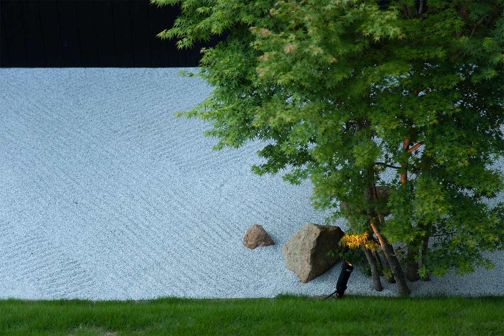
В доме много вещей, которые стоит разглядывать: изделия японских мастеров, предметы хорошего дизайна, вещи в единственном экземпляре. Трещины, патина, простота в них не прячутся. Японцы называют такое чувство красоты «ваби-саби»: красоту ищут в вещи такой, какая она есть.
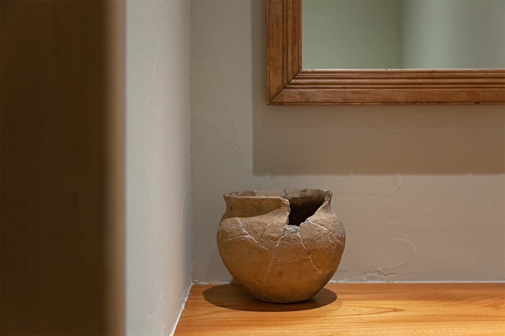
Еда
Постный завтрак и ужин на выбор
День начинается с завтрака по правилам сёдзин-рёри, постной кухни дзэнских храмов. Блюда готовят из местных овощей, только из растительных продуктов, а к ним подбирают разные сорта японского чая.
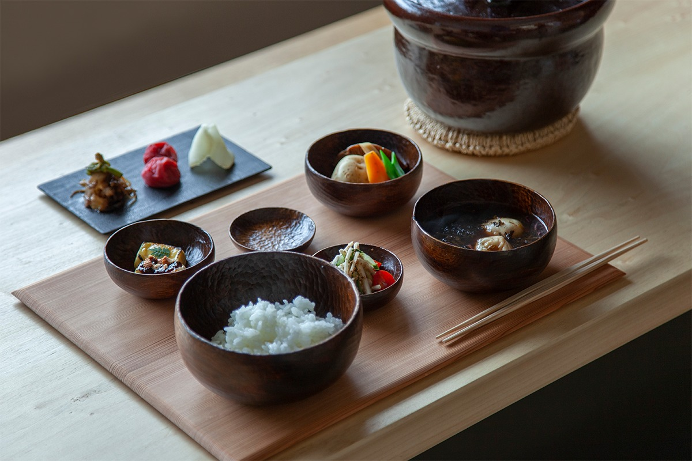
На обед и ужин можно пригласить в дом повара или попросить хозяев проводить в хороший ресторан Камакуры. В гостиной есть чай, кофе, алкогольные и безалкогольные напитки, и всё это бесплатно.
Программа
Вкус начинается с запаха
В марте 2021 года рёкан начал проводить программу о запахах и сёдзин-рёри. Есть мнение, что до 95 процентов вкуса на самом деле приходится на обоняние. Сёдзин-рёри обходится без продуктов животного происхождения и строится на сезонных овощах и сушёных продуктах, а приготовить их стараются так, чтобы раскрылся собственный вкус каждого. Так веками ели в дзэнских храмах.
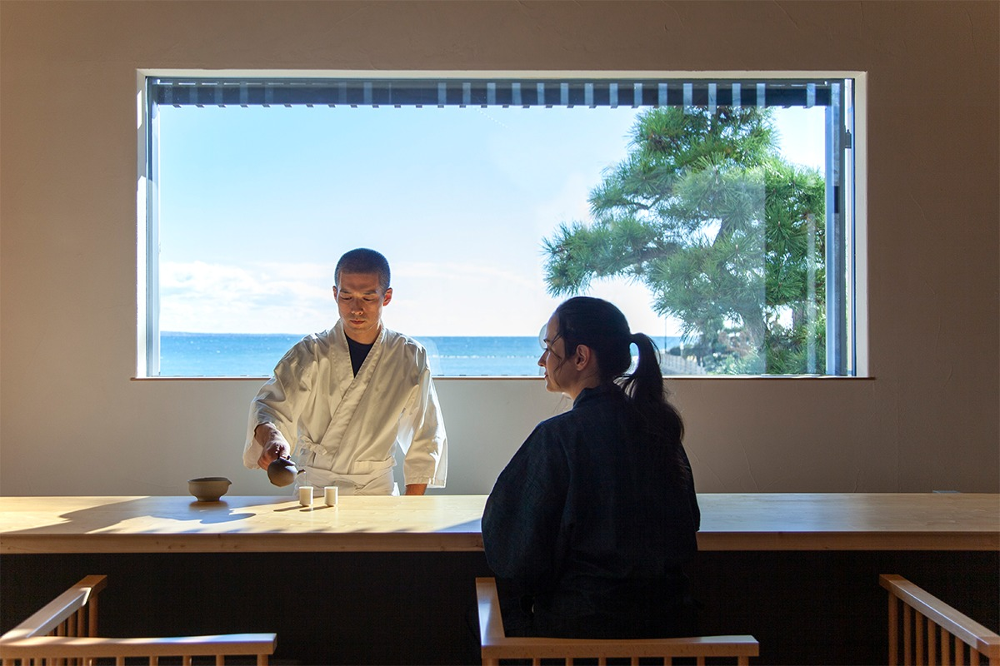
Программа длится около трёх-четырёх часов. Сначала гости успокаиваются чашкой «косэн», ароматного напитка, который заваривают кипятком из чайника, нагретого на древесном угле. Потом трогают руками продукты, из которых будет приготовлен обед, ещё сырыми. Дальше нюхают фрукты, овощи и сушёные продукты по отдельности.
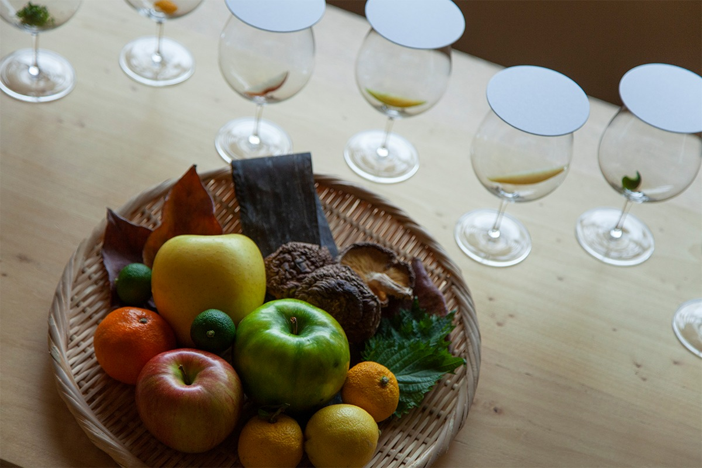
Затем повар прямо на глазах готовит из этих продуктов одно блюдо, и его сразу пробуют. В конце подают курс сёдзин-рёри от самого рёкана с японским чаем: тем, кто приехал на день, на обед, тем, кто ночует, на завтрак. Ведёт программу шеф из префектуры Тиба, который консультирует рестораны и гостиницы по всей Японии и особенно много занимается обучением поваров и питанием детей.
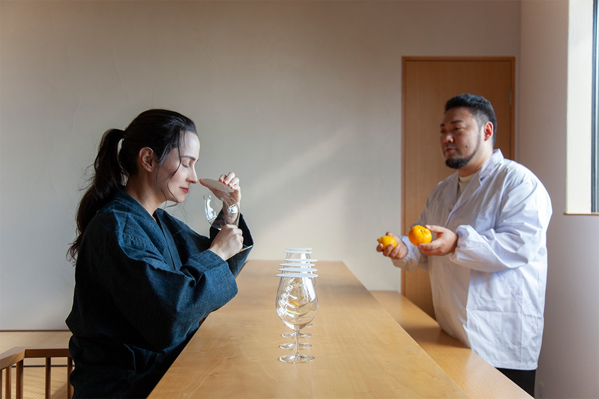
Идея программы проста. Городской житель всё время делает несколько дел сразу, с ноутбуком и телефоном в руках, и день пролетает как на американских горках. Здесь предлагают остановиться и, как японцы прежних времён, заниматься чем-то одним. Взрослые и дети пробуют сёдзин-рёри, чайную церемонию и другие японские искусства и замечают запахи и вкусы, которые обычно пропускают.
В 2021 году программа для гостей с ночёвкой стоила 90 000 иен (проживание оплачивалось отдельно), для гостей на день 240 000 иен. Перевод на английский добавлял 15 000 иен. Ночь для двоих с завтраком стоила от 165 000 иен.
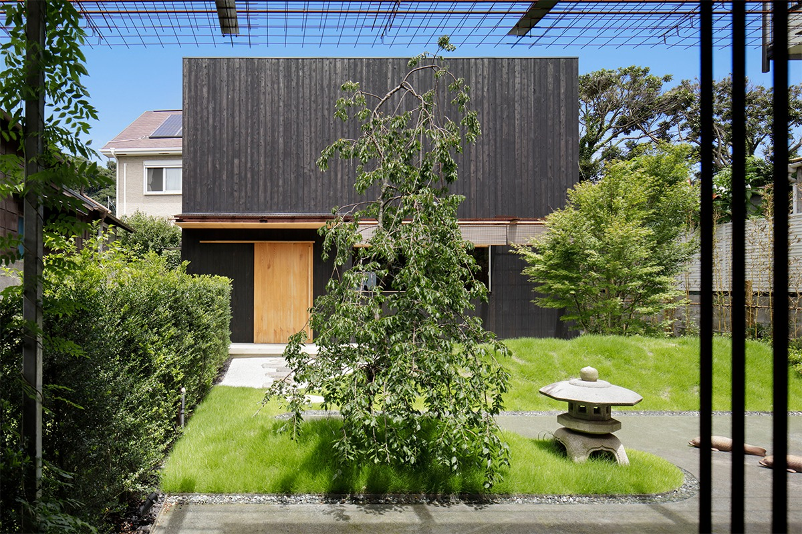
Modern Ryokan kishi-ke
- Адрес
- префектура Канагава, Камакура, Саканосита, 21-5
- Телефон
- +81 90-5544-6125
- Часы работы
- 8:00–22:00, бронирование через официальный сайт
- Выходные
- нерегулярно
- Номера
- дом целиком для одной компании, до 4 человек с ночёвкой, до 5 человек на день
- Цены / Вход
- ночь для двоих с завтраком от 165 000 иен; программа о запахах и сёдзин-рёри 90 000 иен с ночёвкой (проживание отдельно), 240 000 иен на день; перевод на английский 15 000 иен
- Как добраться
- около 5 минут пешком от станции Хасэ линии Эноден
- Сайт
- kishi-ke.co.jp